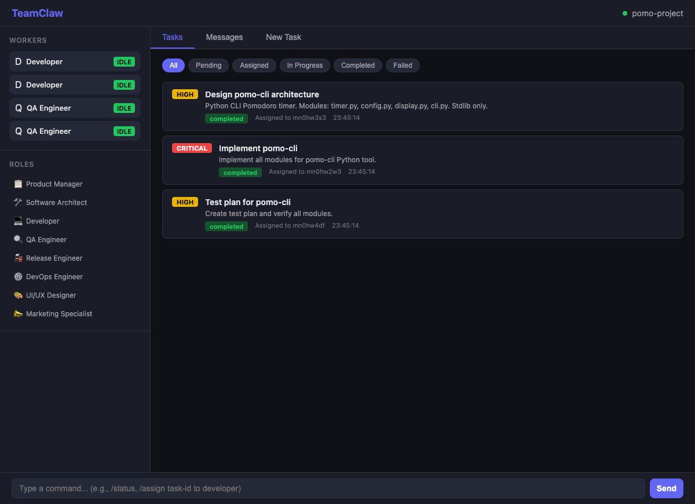
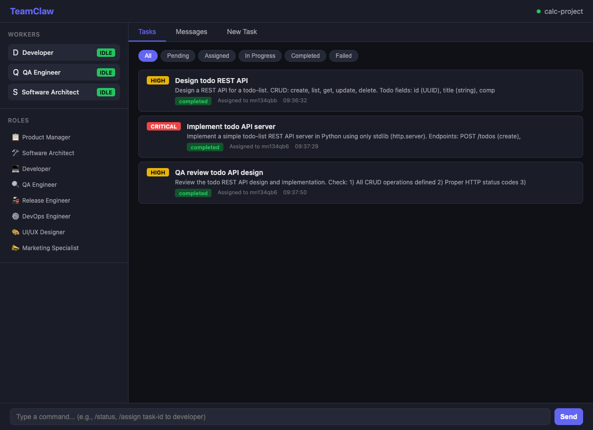
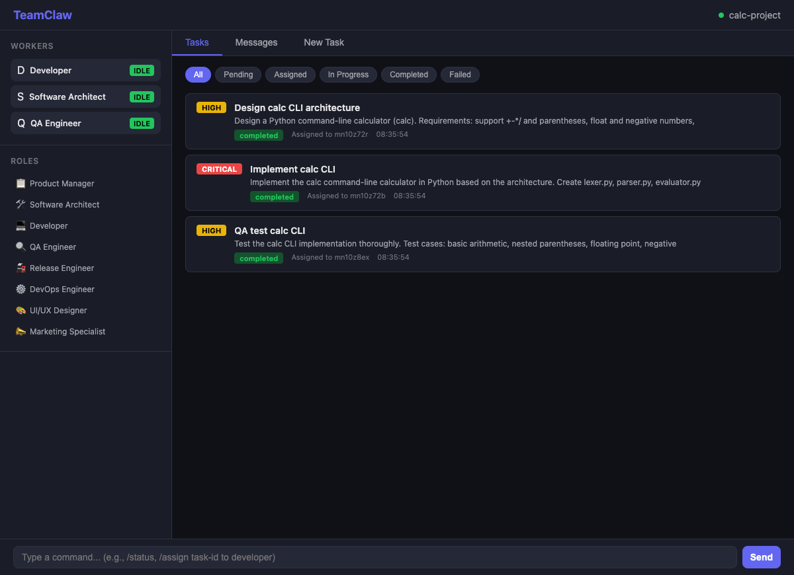

OpenClaw plugin · real multi-role delivery
From a single prompt to a real software team.
TeamClaw turns OpenClaw into a coordinated product, architecture, development, QA, release, and operations workflow — with live task routing, Git-backed collaboration, real model execution, and a web UI you can actually watch.
- Real screenshots from live TeamClaw runs — not mockups
- Validated end-to-end across single, distributed, process, and docker topologies
- Published on GitHub Releases, npm workflow, and ClawHub package catalog
Live workflow
Controller + roles + Git + UI
One shared product flow, isolated worker execution, and visible task state.
Architect
Developer
QA
Release
DevOps
Real proof
Captured from actual running instances.
These screenshots are from live TeamClaw sessions running against real tasks and real model interaction. No mock dashboard, no placeholder UI.



Why TeamClaw
Built for teams that want real orchestration, not demos.
TeamClaw is designed for operators who care about actual role handoff, clear task state, and repeatable delivery flows inside OpenClaw.
Live task routing
Controller-managed assignment, worker status, clarification loops, and visible task history in one UI.
Role-based delivery
Run product, architecture, development, QA, release, DevOps, security, and design work as one coordinated chain.
Git-backed collaboration
Shared workspace handoff, repo sync, and publish flows are part of the product instead of an afterthought.
Real model execution
No mock model server required. The validated flows were exercised with real OpenClaw model interaction.
Flexible deployment
Start with local roles in one OpenClaw instance and scale into distributed, process, docker, or Kubernetes provisioning.
Shippable release path
GitHub Releases, npm publishing, ClawHub package metadata, and setup skill distribution are already part of the release story.
Deployment flexibility
Proven where it matters, expandable where you need it.
TeamClaw has been validated end-to-end on the feasible testbed topologies below, with Kubernetes support still available when your environment is ready for it.
Validated
Single instance + localRoles
The fastest way to get value: one OpenClaw instance, many controller-managed local roles.
Validated
Distributed workers
Separate role workers across machines while keeping one controller and one routed delivery flow.
Validated
Process provisioning
Launch workers on demand as local processes when you need isolation without container overhead.
Validated
Docker provisioning
Spin up containerized workers on demand with the published TeamClaw runtime image.
Supported
Kubernetes provisioning
TeamClaw ships Kubernetes-aware worker provisioning, Helm deployment support, and persistent workspace options.
How it works
A clean flow from raw request to shipped output.
Intake and clarify
Controller mode turns raw human input into executable work, asks for clarifications when needed, and keeps the queue honest.
Route across roles
Architects, developers, QA, release, DevOps, and other roles receive focused tasks without losing context or shared workspace state.
Track and ship
Watch progress in the web UI, keep Git state synchronized, and follow the handoff chain until the flow is actually complete.
Install
Start with the easy path. Scale when you're ready.
TeamClaw is designed to be approachable for first setup and powerful enough for more serious controller/worker deployments.
Guided installer
Best for first-time setup and published runtime image defaults.
npx -y @teamclaws/teamclaw installInstall from npm
Manual plugin install if you already know your OpenClaw environment.
openclaw plugins install @teamclaws/teamclawInstall from ClawHub
Use the published ClawHub package path directly in OpenClaw.
openclaw plugins install clawhub:@teamclaws/teamclawStarter controller config
A clean first setup using one controller and local role workers.
{
"mode": "controller",
"port": 9527,
"teamName": "my-team",
"gitEnabled": true,
"taskTimeoutMs": 1800000,
"localRoles": ["architect", "developer", "qa"]
}
Ship with confidence
Use TeamClaw when you want orchestration you can actually verify.
The product, the runtime image, the GitHub release, the ClawHub package, and the setup skill are all live.